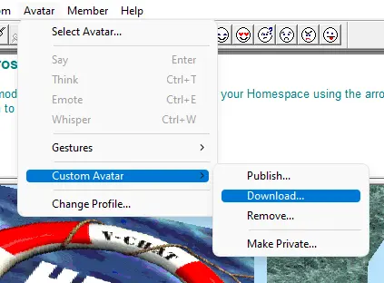
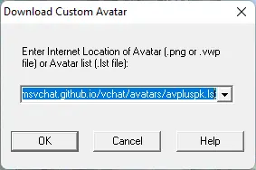
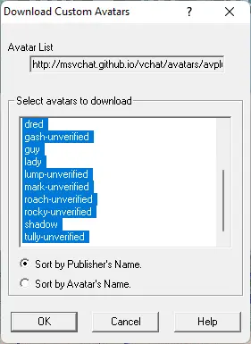

Getting Started
There are a few things you might want to know!
Red links denote that the guide is incomplete or needs to be rewritten.
Here are some active V-Chat servers.
| NAME | ADDRESS | PORT | STATUS |
|---|---|---|---|
| MS V-Chat Museum | msvchatsvr.webredirect.org | 6667 |
|
If you have V-Chat installed, clicking the link above will automatically open V-Chat and connect to the server and enter #V-ChatLobby.
Information on V-Chat 2.0
Microsoft V-Chat ORIGINAL system requirements
- Direct X 3.0
- Win95 or better
- 8MB Ram
- 486 processor or better
- about 3MB initial space*
- V-Chat downloads worlds when you enter an IRC chat room with a graphical link in its description.
- For example: v:{-a http://msvchat.github.io/vchat/worlds/lobby/world.adf}
V-Chat features
- Both graphical and text based chat experiences
- Save chat histories.
- Using the Avatar Wizard you can make or customize an avatar.
- Password your private rooms
- kick out unwanted or obnoxious guests in your own rooms
- Emote through avatar action buttons, or the button beside your text box.
V-Chat is a 3D chat program that involves the user with other users in rich 3D environments. MSN relinquished it as a service in 2001 and stopped developing the chat.
You control your avatar as you walk, fly, and look up and down through the 'rooms' using your arrow keys (up, down, left, right). You can also use your mouse to move around and click "portals" to navigate to different rooms.
What is an Avatar?
Avatars are 2d representations of yourself in V-Chat. With the Avatar Wizard you can make your own avatars.
How to 'fly' in V-Chat.
- ctrl + up arrow key, 'fly' up
- ctrl + down arrow key, 'fly' down
- ctrl + left arrow key, 'sidestep' left
- ctrl + right arrow key, 'sidestep' right
How to look up and down in V-Chat.
- ctrl + alt + up arrow key, reset your veiw
- ctrl + alt + down arrow key, look down
- ctrl + alt + left arrow key, look left
- ctrl + alt + right arrow key, look right
Avatars you can download
Adult Avatars (If you want to use these you will have to host them yourself)
You can download multiple avatars using .lst files, or you can link directly to your avatar from inside V-Chat
NOTE: avpluspk.lst has blank avatars for substitution and unverified avatar names.
"http://msvchat.github.io/vchat/avatars/avpluspk.lst" has 16 avatars.
"http://msvchat.github.io/vchat/avatars/public.lst" has 232 avatars.
"http://msvchat.github.io/vchat/avatars/kusagai.lst" has 7 avatars I made or modified.
"http://msvchat.github.io/vchat/avatars/mv.lst" has 2 avatars mv made and shared with me.

2. Enter one of the addresses above. EXACTLY like above minus the quotation marks. YOU MUST USE HTTP NOT HTTPS V-Chat is too primitive to use https properly. Press OK.

3. It should open a little window "Download Custom Avatars" if it does not, repeat step 2. You may shift+click to select all the listed avatars. Press OK.

4. It should now download all the avatars you have selected.
5. Now you can browse the avatars you have just downloaded by clicking "Avatar > Select Avatar...". They will be listed under the "Custom - Public" directory.